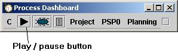
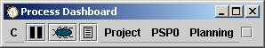

The play/pause button gives access to the timer that is built into the dashboard.
By using the dashboard timer, you can measure the amount of time spent in the various phases of your development process.
By default, the play/pause button shows a triangle when the timer IS NOT running. The intent is that the picture shows what will happen when it is pressed (pressing the play button will cause the timer to start). Once pressed, the button image changes from the triangle to a pair of vertical bars. When the vertical bars are displayed, the timer IS running. Again, the intent is to show what will happen when the button is pressed at this point (pressing the pause button will cause the timer to pause).
|  | |
| Dashboard timer waiting to be started | Dashboard timer running |
If you would prefer to see the triangle when the timer IS currently running (i.e. you would rather see the current state of the timer on the button), you can override this default behavior by adding an entry to the configuration file. Adding the following line to the configuration file will cause the play and pause symbols to reverse their meaning:
pauseButton.showCurrent=true
The configuration file is named "pspdash.ini" on Windows platforms, and ".pspdash" on all other platforms. It is located in either the user's home directory (default) or in the same directory as the pspdash.jar file. For more information about the configuration file see the configuration file help topic.